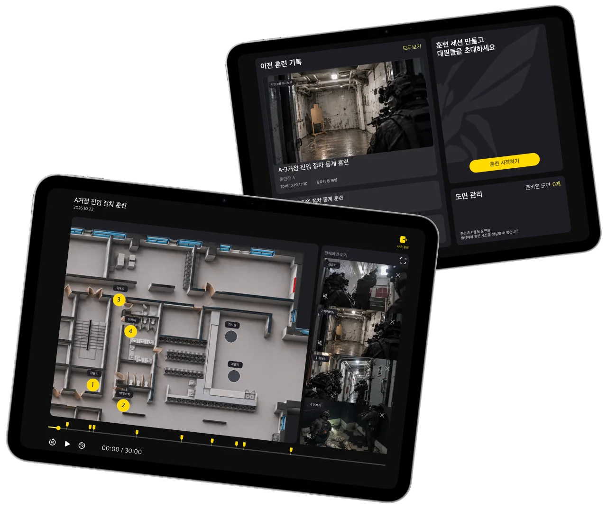

근접전투 훈련 기록 앱
기억이 아닌
기록으로
다시 보는 훈련
대원의 iPhone이 영상·동선·총성을 기록하고,
교관의 iPad가 도면 위에서 한 번에 다시 보여 줍니다.

훈련을 돌아보기 어려웠던 이유
CQB 훈련은 몇 초 만에 끝나고, 돌아볼 때는 서로의 기억에 기대 왔습니다.
누가 어디에 있었지?
진입 순서와 위치를 각자 기억으로 맞춰 봐야 했습니다.
도면 위 동선 재생
대원 iPhone의 ARKit 위치 기록을 도면에 맞춰 보정해, 모든 대원의 움직임을 한 화면에 그립니다.
그때 무엇을 봤지?
대원이 본 장면은 본인만 알고, 다시 확인할 방법이 없었습니다.
대원 시점 영상
대원마다 촬영한 영상을 같은 시간축에 맞춰, 원하는 순간의 시점을 바로 열어 봅니다.
언제 사격했지?
사격 시점은 무전과 기억으로만 남았습니다.
총성 자동 표시
SoundAnalysis로 총성을 감지해 재생 막대와 도면 위에 표시합니다.
실제 훈련장에서 기록한 대원 시점
훈련 한 번, 네 단계
교관과 대원이 각자의 기기로 같은 훈련에 참여합니다.
-
iPad 교관
도면 등록
훈련장 도면을 올리면 벽을 찾아
이동 가능한 공간을 만듭니다.PencilKitARKit
-
iPhone 대원
훈련 참가
PIN으로 세션에 들어와
도면 위 출발 위치를 맞춥니다.ARKitARWorldMap
-
iPhone 대원
훈련 기록
영상·동선·소리를 기록하고
끝나면 업로드합니다.ARKitAVFoundationSoundAnalysis
-
iPad 교관
AAR 재생
동선과 대원 영상, 총성 표시를
한 화면에서 함께 돌려 봅니다.SwiftUIAVFoundation
앱 받기
각자의 시야를 모아
팀의 훈련을
다시 보다